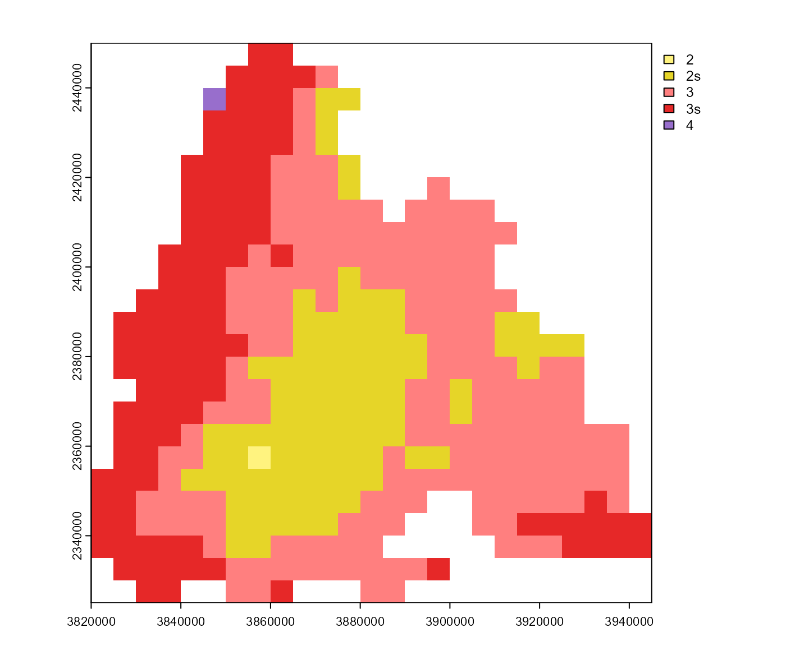

Combine different (sub-)models.
Arguments
- ...
Phenology models, model names or lists with the keys
modelandsubmodels. In the last case, only the submodels specified are used (one of'onset','diapause','mortality'or'development') of the respective model. If multiple models are supplied for the same submodel, the last one overwrites all others.
Value
A phenology model. Can be passed to phenology().
See also
Customize (sub-)models:
model.bso.customize,model.phenips.customize,model.rity.customize,model.chapy.customize,model.joensson.customize,model.lange.customize,model.phenips_clim.customizeUse (sub-)models:
model.bso.apply,model.phenips.apply,model.rity.apply,model.chapy.apply,model.joensson.apply,model.lange.apply,model.phenips_clim.apply
Examples
# \donttest{
# combine PHENIPS with the diapause submodel of PHENIPS-Clim
m <- model_combine('phenips',
list(model = 'phenips-clim', submodels = 'diapause'))
# calculate phenology
p <- phenology(m, barrks_data(), .quiet = TRUE)
# plot calculated generations
gens <- get_generations_rst(p)
terra::plot(gens)

# }